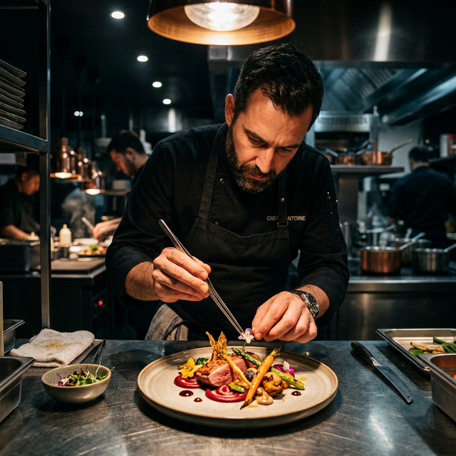

Elevating ingredients to their highest potential through passion and craftsmanship.
Founded in 2026, Savor was born from a simple belief: the best food speaks for itself when treated with profound respect. We work directly with local foragers, organic farmers, and ethical fishermen to source ingredients at their absolute peak.
Our culinary team, led by Executive Chef Antoine, blends traditional techniques with modern innovation, resulting in dishes that are both comforting and surprising.
